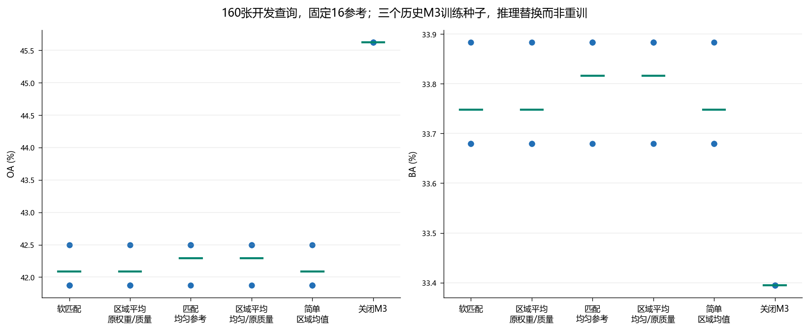
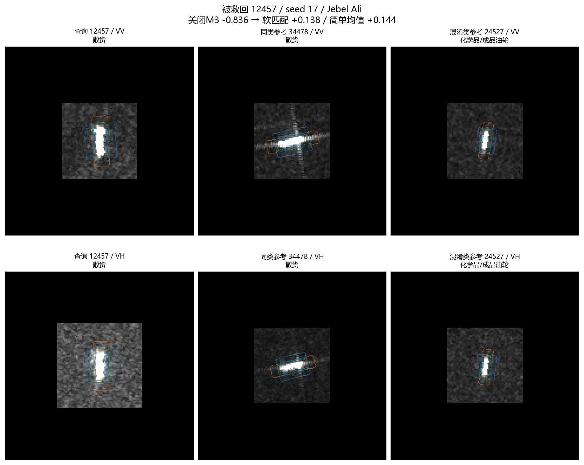
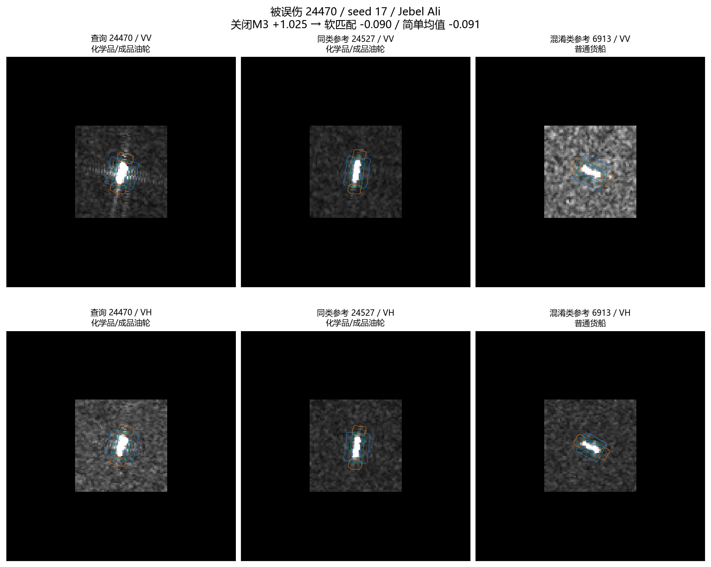
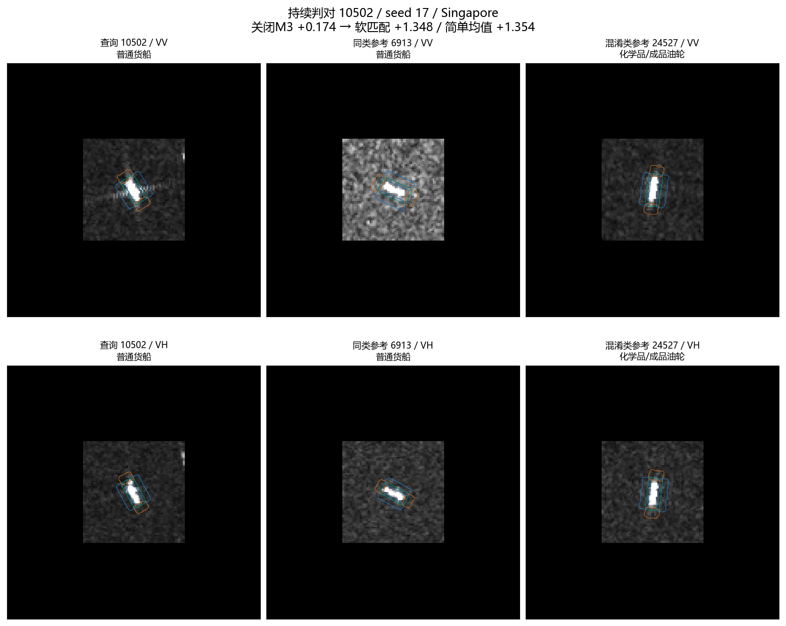
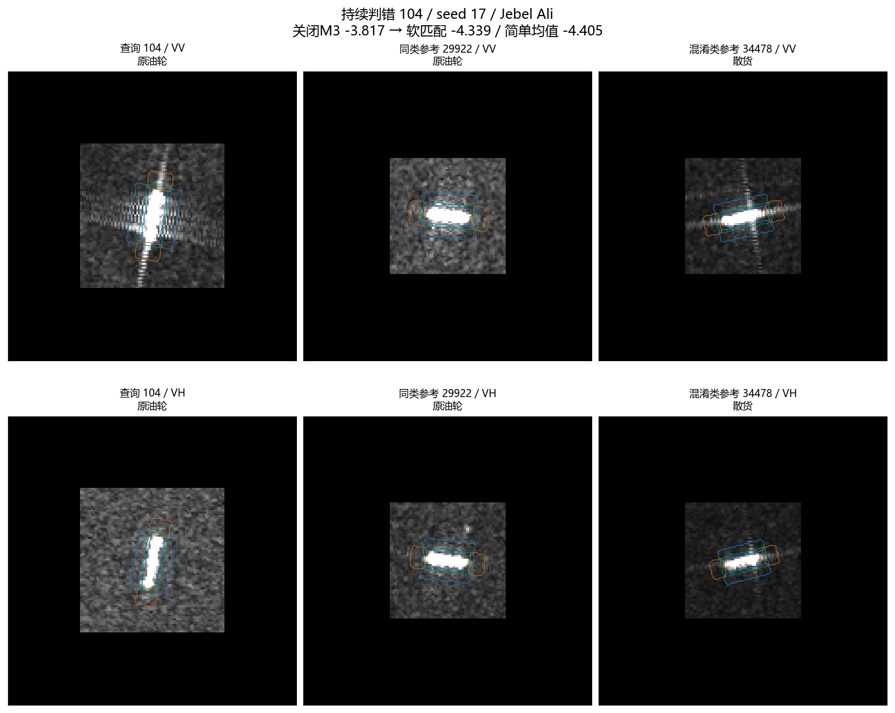

160张开发查询、固定16源参考、三个历史M3种子。未重训、未改正式模型。M3显式频域关闭；历史模型其他部分不在本轮修改范围。
精细局部匹配换成区域均值，480次配对预测均未改变。简单区域均值也保留12457的救回。这不证明分别训练后的架构等价。

| seed | arm | oa | ba | nll | brier |
|---|---|---|---|---|---|
| 17 | soft | 41.875 | 33.679808 | 2.641654 | 0.876521 |
| 17 | pool_keep_beta_mass | 41.875 | 33.679808 | 2.642163 | 0.876691 |
| 17 | uniform_refs | 41.875 | 33.679808 | 2.639468 | 0.875380 |
| 17 | pool_uniform_mass | 41.875 | 33.679808 | 2.639862 | 0.875511 |
| 17 | simple_region_mean | 41.875 | 33.679808 | 2.645436 | 0.877370 |
| 17 | m3_off | 45.625 | 33.394712 | 2.546153 | 0.831261 |
| 29 | soft | 42.500 | 33.883890 | 2.633114 | 0.871605 |
| 29 | pool_keep_beta_mass | 42.500 | 33.883890 | 2.633619 | 0.871769 |
| 29 | uniform_refs | 42.500 | 33.883890 | 2.631297 | 0.870670 |
| 29 | pool_uniform_mass | 42.500 | 33.883890 | 2.631684 | 0.870794 |
| 29 | simple_region_mean | 42.500 | 33.883890 | 2.636959 | 0.872539 |
| 29 | m3_off | 45.625 | 33.394712 | 2.546153 | 0.831261 |
| 43 | soft | 41.875 | 33.679808 | 2.638561 | 0.874794 |
| 43 | pool_keep_beta_mass | 41.875 | 33.679808 | 2.639057 | 0.874951 |
| 43 | uniform_refs | 42.500 | 33.883890 | 2.636819 | 0.873820 |
| 43 | pool_uniform_mass | 42.500 | 33.883890 | 2.637206 | 0.873943 |
| 43 | simple_region_mean | 41.875 | 33.679808 | 2.642576 | 0.875764 |
| 43 | m3_off | 45.625 | 33.394712 | 2.546153 | 0.831261 |

| arm | prediction | margin |
|---|---|---|
| soft | 0 | 0.137556 |
| pool_keep_beta_mass | 0 | 0.139632 |
| uniform_refs | 0 | 0.115474 |
| pool_uniform_mass | 0 | 0.117226 |
| simple_region_mean | 0 | 0.144237 |
| m3_off | 3 | -0.835981 |

| arm | prediction | margin |
|---|---|---|
| soft | 2 | -0.090229 |
| pool_keep_beta_mass | 2 | -0.089844 |
| uniform_refs | 2 | -0.066784 |
| pool_uniform_mass | 2 | -0.066767 |
| simple_region_mean | 2 | -0.090597 |
| m3_off | 3 | 1.024972 |

| arm | prediction | margin |
|---|---|---|
| soft | 2 | 1.347594 |
| pool_keep_beta_mass | 2 | 1.348240 |
| uniform_refs | 2 | 1.329097 |
| pool_uniform_mass | 2 | 1.329659 |
| simple_region_mean | 2 | 1.354119 |
| m3_off | 2 | 0.173606 |

| arm | prediction | margin |
|---|---|---|
| soft | 0 | -4.338640 |
| pool_keep_beta_mass | 0 | -4.345269 |
| uniform_refs | 0 | -4.346047 |
| pool_uniform_mass | 0 | -4.351213 |
| simple_region_mean | 0 | -4.405276 |
| m3_off | 0 | -3.816793 |
| arm | prediction | margin |
|---|---|---|
| soft | 2 | -0.010144 |
| pool_keep_beta_mass | 2 | -0.009804 |
| uniform_refs | 3 | 0.012428 |
| pool_uniform_mass | 3 | 0.012454 |
| simple_region_mean | 2 | -0.011562 |
| m3_off | 3 | 1.024972 |
图像使用实际输入视图与原有显示标度，无额外拉伸。绿色框内，蓝色侧向，橙色轴端；不据外观命名物理散射机制。